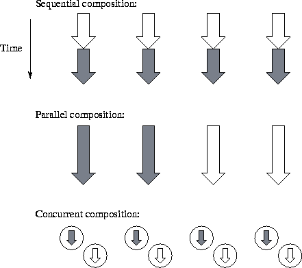
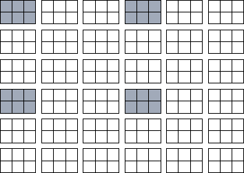
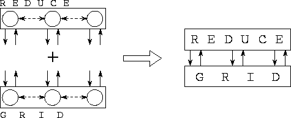

![[DBPP]](pictures//asm_color_tiny.gif)


![[Search]](pictures//search_motif.gif)
The design principles reviewed in the preceding section apply directly to parallel programming. However, parallelism also introduces additional concerns. A sequential module encapsulates the code that implements the functions provided by the module's interface and the data structures accessed by those functions. In parallel programming, we need to consider not only code and data but also the tasks created by a module, the way in which data structures are partitioned and mapped to processors, and internal communication structures. Probably the most fundamental issue is that of data distribution.

Figure 4.1: Three forms of parallel program composition. In each
case, the program is shown executing on four processors, with each arrow
representing a separate thread of control and shading denoting two
different program components. In sequential composition, different
program components execute in sequence on all processors. In parallel
composition, different program components execute concurrently on
different processors. In concurrent composition, different program
components execute concurrently on the same
processors.
Another difference between sequential and parallel programming is that in the former, modules can be put together (composed) in just one way: sequentially. Execution of a program leads to a sequence of calls to functions defined in different modules. This is called sequential composition and can also be used in parallel programming, and indeed is fundamental to the SPMD programming model used in many parallel programs. However, we often need to compose program components in other ways (Figure 4.1). In parallel composition, different modules execute concurrently on disjoint sets of processors. This strategy can enhance modularity and improve scalability and locality. In concurrent composition, different modules execute concurrently on the same processors, with execution of a particular module enabled by the availability of data. Concurrent composition can both reduce design complexity and allow overlapping of computation and communication.
We distinguish between sequential, parallel, and concurrent composition both because they are different ways of thinking about programs and because not all parallel programming tools support all three compositional forms. Data-parallel languages (such as HPF) tend to support only sequential composition. Message-passing libraries (such as MPI) typically support both sequential and parallel composition but not concurrent composition. Other languages and libraries (such as CC++ and Fortran M) support all three forms of composition.
In Chapters 2 and 3, we showed that the distribution of a program's data structures among tasks and processors (that is, the way in which data structures are partitioned and mapped) is an important aspect of parallel algorithm design. We also showed how to design data distributions that maximize performance and/or minimize software engineering costs.
Data distribution can become a more complex issue in programs constructed from several components. Simply choosing the optimal distribution for each component may result in different modules using different data distributions. For example, one module may output an array data structure distributed by columns, while another expects its input to be distributed by rows. If these two modules are to be composed, then either the modules themselves must be modified to use different distributions, or data must be explicitly redistributed as they are passed from one component to the other. These different solutions can have different performance characteristics and development costs.
Both performance tuning and program reuse are made easier if modules are designed to be data distribution neutral , that is, if they can deal with a variety of different data distributions. This neutrality can be achieved by specifying the distribution of a particular data structure as a runtime parameter or in the data structure itself. For example, the two modules referred to in the preceding paragraph could be defined to deal with arbitrary two-dimensional decompositions. The combined program could then utilize a decomposition by rows, a decomposition by columns, or (as a compromise) a two-dimensional decomposition.
Designing a module to be data distribution neutral is not necessarily easy. In some cases, different data distributions may call for quite different algorithms. This issue is explored in more detail in Section 4.6.
In a parallel program constructed using only sequential composition, each processor inevitably executes the same program, which in turn performs a series of calls to different program components. These program components may themselves communicate and synchronize, but they cannot create new tasks. Hence, the entire computation moves sequentially from one parallel operation to the next.
As an example, consider the following program, which could be executed by each task in an SPMD finite difference program.
while (not done) dofinite_difference(localgrid, localmax)
global_maximum(localmax, globmax)
if(globmax < threshold) done = true
enddo
This program is structured as a sequential composition of two procedure calls and a conditional statement. At each step, each task first calls the procedure finite_difference to advance the simulation on its part of the finite difference grid. This updates localgrid and returns a local error estimate, localmax. Next, each task calls global_maximum to obtain a global maximum error, which is used to determine whether the simulation has converged. On a parallel computer, both the finite_difference and global_maximum routines must perform communication (to exchange the data required by the finite difference stencil and to compute the global maximum, respectively), but this activity is hidden from the rest of the program.
This example illustrates an important advantage of sequential composition and the SPMD model: the program executed by each process has a fairly straightforward sequential reading, and many sequential programming techniques can be used unchanged. For example, the procedures finite_difference and global_maximum can be defined in separate grid and reduction modules, both of which can encapsulate internal data structures (and communication structures).
A second advantage of sequential composition is that if different modules use the same data distribution, no data movement (and hence no communication) is required at module interfaces. For example, the top-level structure of an SPMD climate modeling system could be as follows. Procedures from ocean and atmosphere modules are called repeatedly in an interleaved fashion, with data generated by the ocean module being passed to the atmosphere module and vice versa. Communication is required only within the two components.
initialize_ocn(ocn_grid)initialize_atm(atm_grid)
while (not done) do
ocean(atm_grid, ocn_grid)
atmosphere(ocn_grid, atm_grid, done)
enddo
As these examples show, a library intended for use in an SPMD programming environment can utilize an interface almost identical to that used in a comparable sequential library. The principal concerns are that library routines be able to deal with a variety of data distributions (that is, be data distribution neutral) and that parallel implementation details such as data structures and communication operations be hidden behind interfaces.

Figure 4.2: A block cyclic distribution of a two-dimensional array
of size 12 18 onto a processor array of size 3
18 onto a processor array of size 3 3
( P=Q=3
) with a block size of 2
3
( P=Q=3
) with a block size of 2 3 ( r=2
, c=3
).
Array elements mapped to processor (0,0)
are
shaded.
3 ( r=2
, c=3
).
Array elements mapped to processor (0,0)
are
shaded.
The simplicity of sequential composition and SPMD programming has stimulated some major parallel library development projects. One example, which we describe here to illustrate how data distribution neutral libraries are defined, is ScaLAPACK, a version of the popular LAPACK linear algebra library designed to execute on scalable parallel computers. ScaLAPACK supports a wide range of operations on dense and banded matrices, such as multiplication, transpose, and factorization. Its routines operate on data objects representing two-dimensional matrices decomposed by using a block cyclic distribution. The distribution of an array is specified by four parameters, P , Q , r , and c , where P and Q denote the number of processors and r and c the block size in each dimension (Figure 4.2). In principle, every routine can be called with any parameter values, so the programmer can experiment with alternative data distributions simply by changing parameters in a top-level program. This approach provides a high degree of mapping independence, in a manner evocative of the data distribution directives employed in the data-parallel language High Performance Fortran (HPF) (Chapter 7). In practice, certain limitations are placed on allowable parameter values so as to simplify the software. For example, the LU factorization routine requires that blocks be square. Internally, ScaLAPACK routines may incorporate multiple parallel algorithms and select between these algorithms based on distribution, problem size, and machine size. However, these details are hidden from the user. Program 4.1 illustrates the use of ScaLAPACK routines.
Not surprisingly, sequential composition also has limitations as a program structuring technique for parallel programs. We examine some of these limitations in the subsections that follow.
Parallel composition can be viewed as a generalization of the SPMD programming model in which different parts of a computer execute different programs. (It can also be thought of as a special case of concurrent composition in which concurrently executing tasks are required to execute on disjoint sets of processors.) A parallel composition specifies which program components are to execute in which parts of the computer and how these components are to exchange data.
In principle, any program expressed as a parallel composition can be converted to a sequential composition that interleaves the execution of the various program components appropriately. However, the use of parallel composition can enhance scalability and locality. For example, if two program components (such as the atmosphere and ocean model considered in the preceding section) can execute concurrently, then mapping them to disjoint sets of processors increases scalability by providing additional opportunities for parallel execution. If locality increases with granularity, then this parallel composition can also make more efficient use of cache, memory, and communication bandwidth than can a sequential composition of the same components. Parallel composition can also decrease total memory requirements by reducing the amount of code and data replicated on every processor.
Concurrent composition is the most general form of composition that we consider. A concurrent composition specifies the program components that are to execute concurrently, producer/consumer relationships between components, and the mapping of components to processors. Components then execute in a data-driven manner, meaning that they can be executed if the data that they require from other components are available. These ideas should be familiar from the discussion of the task/channel programming model in Chapter 1. In the terms of that model, a concurrent composition specifies a set of tasks, a set of channels connecting these tasks, and a mapping of tasks to processors.
Concurrent composition has both advantages and disadvantages relative to sequential and parallel composition. One important advantage is that it can facilitate information hiding and hence the development of modular programs. This is because the interfaces in a concurrent composition consist entirely of the channels connecting the various components. Internal implementation details concerning code, data structures, concurrency, and communication are hidden. Hence, program components can be designed and developed in isolation even when they need to execute on the same processors.
Concurrent composition can also simplify design by allowing decisions concerned with mapping and scheduling to be delayed or even avoided altogether. Because the semantics of a program specified by using concurrent composition are independent of how program components are mapped to processors, mapping decisions can be delayed until late in the design process, as recommended in Chapter 2. Because the execution schedule is determined by the availability of data, execution order need not be specified explicitly by the programmer.
A disadvantage of concurrent composition in some environments is the cost of a data-driven execution model. While compilers and runtime systems can do much to reduce costs incurred when switching between tasks, these costs can be significant if task switches occur frequently.

Figure 4.3: A finite difference program can be structured as a
concurrent composition of reduce and grid components. The
first of these components is designed to perform reductions, while the
second performs finite difference computation. An array of channels
defines the interface between the two components, which encapsulate
internal task and channel structures. The two components may execute
on the same or different processors.
 Finite Difference Problem:
Finite Difference Problem:
Figure 4.3 shows how the finite difference program can be constructed as a concurrent composition of grid and reduce components. The grid module might create a set of tasks specified as follows. The arguments to_reduce and from_reduce are ports referencing channels that can be used to send data to and receive data from the reduce module, respectively.
procedure grid(to_reduce, from_reduce)begin
while(not done) do ! Repeat for each step
exchange_with_neighbors(grid)
compute(grid, localmax) ! Local computation
send(to_reduce, localmax) ! Dispatch request for reduction
other_computation(grid) ! More local computation
receive(from_reduce, globmax) ! Receive reduced value
if(globmax < threshold) done = true
enddo
end
At each step, this code performs some computation before sending a message requesting a reduction operation, and then performs other computation before receiving the result. The other computation can be overlapped with the communication required for the reduction.
We conclude this section with a set of design rules that can be used to determine how to compose modules and which sorts of interfaces to design.
© Copyright 1995 by Ian Foster